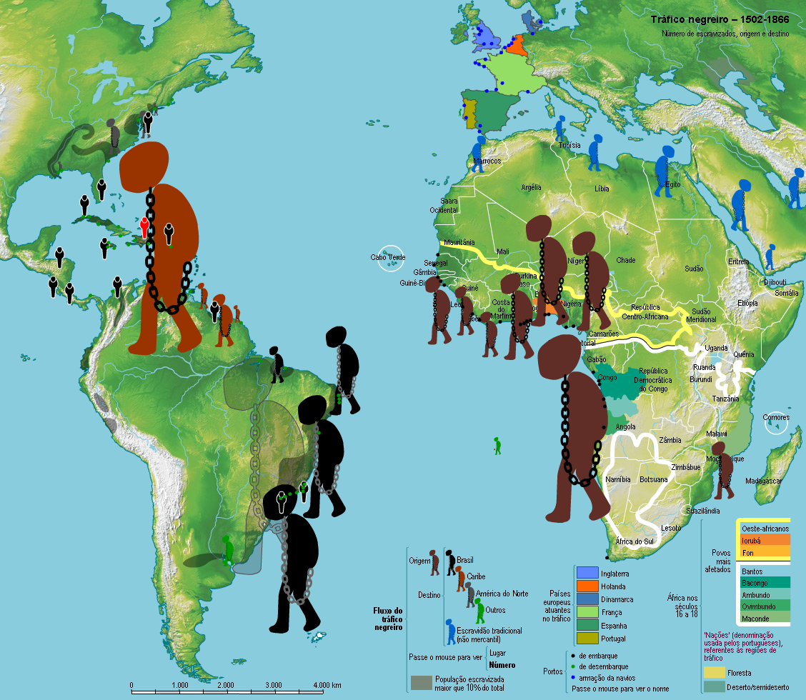
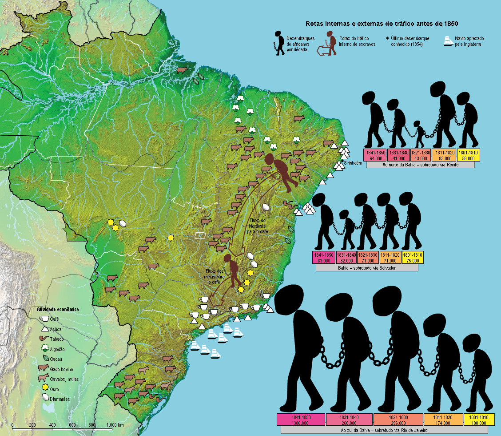

Úrsula: do ponto de vista da Geografia...
A Geografia estuda a relação entre o homem e o espaço. No Capítulo IX de Úrsula, a personagem Mãe Susana narra um processo de desterritorialização forçada. O mar, para ela, não é apenas um elemento físico, mas um abismo político e social que rompeu sua identidade africana para aprisioná-la na estrutura de poder de uma fazenda maranhense.
A Geopolítica do Tráfico Transatlântico
O fluxo de seres humanos através do Atlântico foi um dos maiores movimentos migratórios forçados da história, moldando a demografia do continente americano. Veja abaixo a amplitude dessas rotas:

O Brasil na Rota do Desterro
Estima-se que chegaram ao Brasil cerca de 5 milhões de africanos entre 1500 e 1850. Observe no detalhe abaixo como as rotas se concentravam em portos estratégicos, como o de São Luís, porta de entrada para a realidade Maranhense vivida e denunciada por Maria Firmina dos Reis:

Ao ler os excertos, perceba como o espaço geográfico da fazenda do Comendador Fernando é organizado para a vigilância e controle, refletindo a estrutura social e a exclusão precária de grupos na ordem econômica, determinando as características sociais do território.